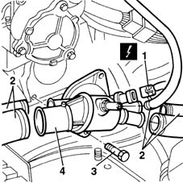

1088C40 thermostat- r + r
- Path
- Procedures > 10 ENGINE UNIT > 1088 ENGINE COOLING > 1088C water pump and thermostat > 1088C40 thermostat- r + r
- Kind
- repair procedure (removal / refitting; the operation number is the code)
- Applies to
- engines: 1.9 JTD 8V; all production periods
- Interactive page
- https://sloeber94.github.io/elrnDB-fMltpl/en/#/2891446
Applies to: engines: 1.9 JTD 8V; all production periods
 Removing
Removing
 Refitting
Refitting1048A10 AIR CLEANER FILTERING ELEMENT - REPLACE
Place a container under the vehicle to collect the engine coolant.
Undo the plug in the lower part of the engine radiator and drain the coolant system.
1. Disconnect the electrical connection from the engine temperature sensor.
 | Name | Connector |
|---|---|---|
1 | Engine coolant temperature sensor |
2. Disconnect the coolant hoses from the thermostat.
3. Undo the bolts.
4. Remove the thermostat from the cylinder head.

Applies to: engines: 1.9 JTD 8V; all production periods
Refitting
RemovingFit the thermostat in its seat on the cylinder head.
Tighten the fixing bolts to torque.
 | Fastening | Component | Ø | Value (daNm) |
|---|---|---|---|---|
- | Bolt | COOLANT PUMP | M8 | 2.5 |
Connect the coolant hoses to the thermostat.
Connect the electrical connection to the engine temperature sensor.
| Name | Connector |
|---|---|---|
- | Engine coolant temperature sensor |
1048A10 AIR CLEANER FILTERING ELEMENT - REPLACE
- 1088A10 Engine COOLANT - Check density' and top up level, if necessary